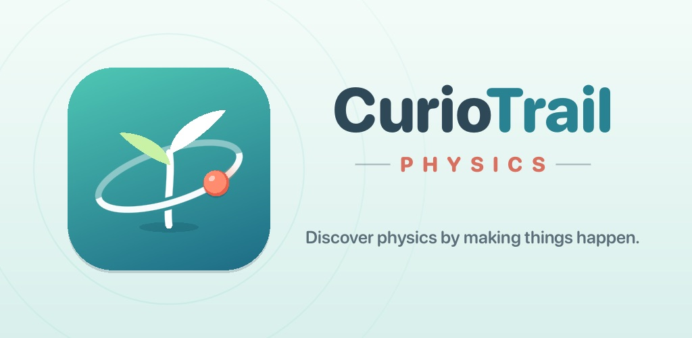
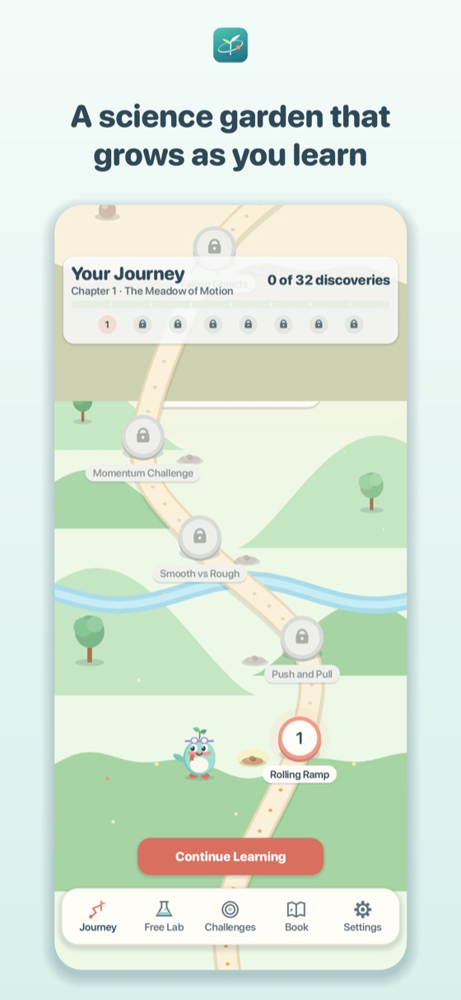
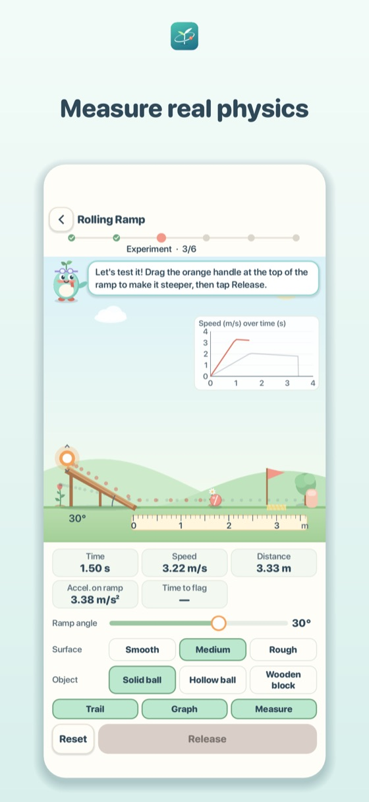
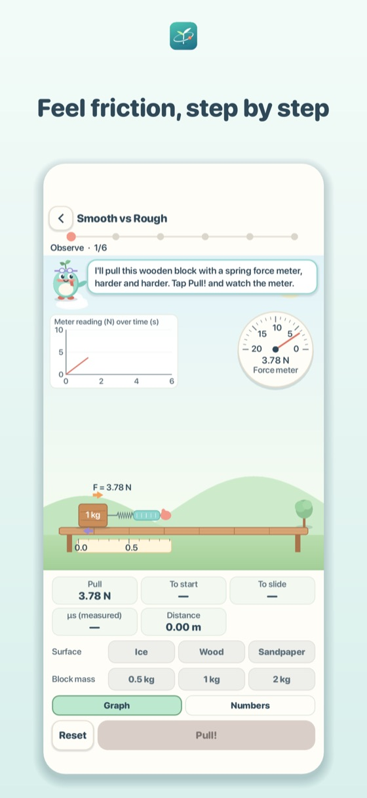

iPhone · iPad · Android
CurioTrail: Physics
Learn physics the way scientists do: make a guess, run the experiment, measure what happens and find out why. A calm science garden that grows as you learn, with Pip the sprout-headed explorer.

- Rolling Ramp: tilt the ramp, change the surface and gravity, and time the ball to the flag
- Push and Pull: push carts of different masses and discover Newton's second law
- Smooth vs Rough: pull a block across ice, wood and sandpaper and feel static and sliding friction
- Accurate simulations in SI units, checked by automated tests against hand-calculated results
- Free Lab (with Moon and Mars gravity), Challenges and your own Discovery Book
- Text size options, reduced motion and sound captions; English and Turkish
- No ads, no in-app purchases, no data collection, plays fully offline



Türkçe
Fiziği bilim insanlarının yaptığı gibi öğren: önce tahmin et, deneyi yap, olanı ölç ve nedenini keşfet. Rampadan top yuvarla, farklı kütlelerde arabaları it, bloğu buz, tahta ve zımpara üzerinde çekerek sürtünmeyi hisset. Öğrendikçe büyüyen bir bilim bahçesi. Reklam yok, uygulama içi satın alma yok, veri toplama yok, tamamen çevrimdışı.
Privacy Policy / Gizlilik · Terms of Use / Kullanım Koşulları · Support / Destek